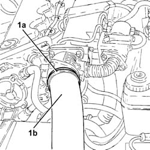
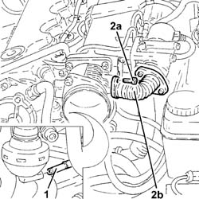
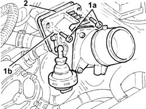
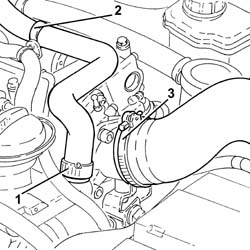
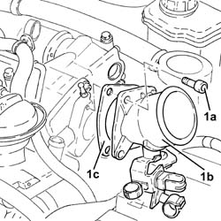
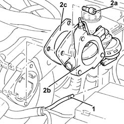
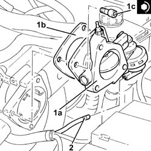
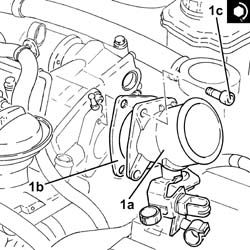

1060G50 Electro-pneumatically controlled THROTTLE CASING - R.R.
- Path
- Procedures > 10 ENGINE > 1060 DIESEL FUEL INJECTION > 1060G pressure pump electric control > 1060G50 Electro-pneumatically controlled THROTTLE CASING - R.R.
- Kind
- repair procedure (removal / refitting; the operation number is the code)
- Applies to
- engines: 1.9 JTD 8V, 1.9 JTD 16V; all production periods
- Interactive page
- https://sloeber94.github.io/elrnDB-a147/en/#/3025050
Applies to: engines: 1.9 JTD 8V; all production periods
 Removing
Removing
 Refitting
Refitting1016A10 sound-proofing cover - r + r
1. Loosen band (1a) and disconnect the air delivery sleeve from heat exchanger to intake manifold.

Applies to: engines: 1.9 JTD 8V; all production periods
1. Disconnect the vacuum pipe from the pneumatic valve on the throttle body.
2. Undo bolts (2a) and disconnect the expansion coupling on EGR valve (2b) from the throttle body.

Applies to: engines: 1.9 JTD 8V; all production periods
Release the vacuum pipe leading from the throttle body from the bracket.
1. Undo the retaining bolts (1a) and remove the throttle casing (1b).
2. Remove the gasket.

Applies to: engines: 1.9 JTD 8V; all production periods
Refitting
RemovingFit the throttle body to the intake manifold and gasket.
Tighten the bolts retaining the throttle casing to the intake manifold.
Connect the vacuum pipe to the mount bracket.
Connect the expansion joint to the throttle body and tighten the retaining bolts.
Connect the vacuum pipe to the pneumatic valve on the throttle body.
Conect the air supply hose from the heat exchanger to the inlet manifold.
Applies to: engines: 1.9 JTD 16V; all production periods
Removing
RefittingProceed with removal 7025A12 Engine front sound insulation COVER - R.R. .
Proceed with removal 7025A14 Bonnet LID - R.R. .
Proceed with removal 1016A10 sound-proofing cover - r + r .
1. Loosen the band and disconnect the engine oil vapour recovery pipe from the engine oil filler.
2. Release the engine oil vapour recovery pipe from the fastening band and move it sideways.
3. Loosen the band and disconnect the air intake hose from the connector on the throttle casing.

Applies to: engines: 1.9 JTD 16V; all production periods
1. Undo the bolts (1a) and remove the connector on the throttle casing (1b) complete with gasket.

Applies to: engines: 1.9 JTD 16V; all production periods
1. Disconnect the vacuum pipe from the pneumatic valve on the throttle body.
2. Undo the bolts (2a) and remove the electro-pneumatically controlled throttle casing (2b) complete with gasket (2c).

Applies to: engines: 1.9 JTD 16V; all production periods
Refitting
Removing1. Replace the pneumatically-controlled throttle body (1a), complete with gasket (1b), back in its housing and secure by tightening bolts (1c) to the recommended torque.
 | Fastening | Component | Ø | Value (daNm) |
|---|---|---|---|---|
1c | - | - | - | - |
2. Connect the vacuum pipe to the pneumatic valve on the throttle body.

Applies to: engines: 1.9 JTD 16V; all production periods
1. Replace the connector on the throttle body (1a), complete with gasket (1b), back in its housing and secure by tightening bolts (1c) to the recommended torque.
| Fastening | Component | Ø | Value (daNm) |
|---|---|---|---|---|
1c | - | - | - | - |

Applies to: engines: 1.9 JTD 16V; all production periods
Connect the air inlet hose to the connector on the throttle casing and tighten the band.
Place the engine oil vapour recovery pipe in its seat and secure it using the band.
Connect the engine oil vapour recovery pipe to the engine oil filler and tighten the band.
Proceed with refitting 1016A10 sound-proofing cover - r + r .
Proceed with refitting 7025A14 Bonnet LID - R.R. .
Proceed with refitting 7025A12 Engine front sound insulation COVER - R.R. .
Topics linked from this page (3)
- 1016A10 sound-proofing cover - r + r
- 7025A12 Engine front sound insulation COVER - R.R.
- 7025A14 Bonnet LID - R.R.